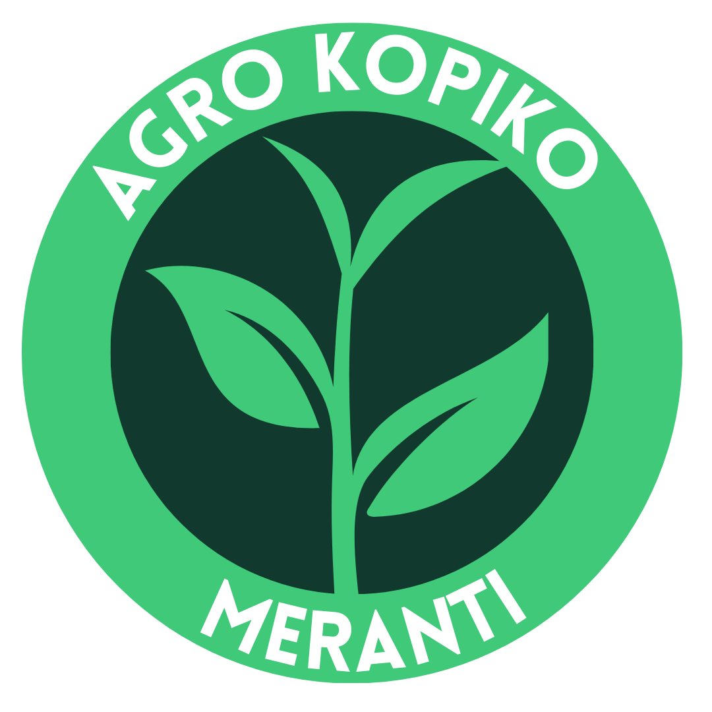

Web Aplikasi Layanan Administrasi Surat
Kawasan Agro Kopiko Meranti
Selamat Datang di Sistem Layanan Administrasi Surat Kawasan Agro Kopiko Meranti
Agro Kopiko Meranti adalah instansi yang bergerak di bidang pertanian dan pengolahan kopi di daerah Meranti...
